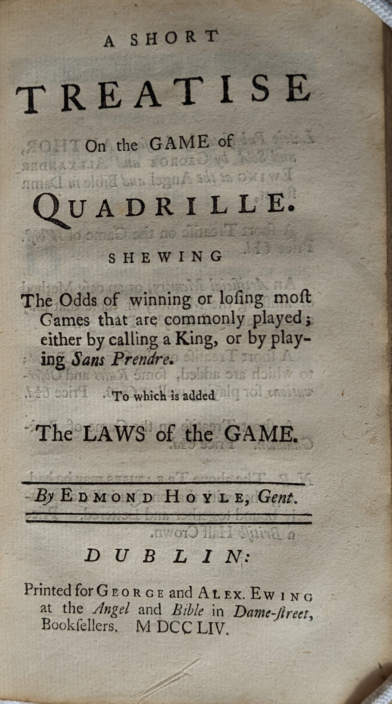

A Descriptive Bibliography of Edmond Hoyle
Copyright © 2014-26 by David Levy
(page updated 2025-03-28)User Guide
Quadrille.D.2*
A Short Treatise on the Game of Quadrille, printed for George and Alex. Ewing, second Dublin edition, 1754.
 |
Title: | A SHORT | TREATISE | On the GAME of | Quadrille. | SHEWING | The Odds of winning or loſing moſt | Games that are commonly played; | either by calling a King, or by play-|ing Sans Prendre. | To which is added | The LAWS of the GAME. | [rule] | By Edmond Hoyle, Gent. | [double rule] | DUBLIN: | Printed for George and Alex. Ewing | at the Angel and Bible in Dame-ſtreet, | Bookſellers. M DCC LIV. |
| Collation: | 12o: A–B8/4 [$½ signed]; 12 leaves, pp. [1–3] 4–23 [24] |
| Contents: | Signature (Page) Reference | Contents | Signature (Page) Reference | Running Titles |
| A1r (1) | title | |||
| A1v (2) | advertisement for other Ewing editions of Hoyle. See note below. | |||
| A2r–B4r (3–23) | ‘[row of type orn] | A Treatiſe on the Game of | QUADRILLE. | [...]’ | A2v–B4r (4–23) | ‘A ſhort Treatiſe on the | Game of Quadrille.’ | |
| B4v (24) | ‘[row of type orn] | CONTENTS. | [...]’ |
| Catchwords: | B3v(22) XX. He [XXI. He] |
| Publisher: | George and Alexander Ewing |
| References: | ESTC T118622 |
| Copies Seen in Collections: | L [1607/4733] (ECCO) (see Ewing.D); L [1607/529] (see Ewing.D); O [Jessel f.572] (ECCO) (see Ewing.C); O [Jessel f.574] (see Ewing.D); NvLN [GV1241.H86 1761] (see Ewing.D); OCl [789.87H F61D] (see Ewing.D); TNJ [GV1241.H8P 1752b c.1] (see Ewing.C); TNJ [GV1241.H8P 1752b c.1] (see Ewing.C); Levy [1745] (see Ewing.D); Levy [1804] (see Ewing.D) |
| Other Copies in Collections: | C [Hib.7.761.25] (see Ewing.D); HAG [KW 364 G 168] (see Ewing.D); LU-S [GV1241.H86 1761] (see Ewing.D); NNStJ [GV1241.H86 1761] (see Ewing.D); NNU-F [789.87H F61D] (see Ewing.D); NjP [GV1241.H86 1761] (see Ewing.D); OCl [GV1241.H6 1761] (see Ewing.D); RP [795 H868 1761 SpecColT] (see Ewing.D) |
| Notes: | I doubt that this book was ever sold separately. The only copy outside of The Polite Gamester it at the British Library. See the discussion in Whist.D.5. It is a nearly line-for-line resetting of Quadrille.D.1 and it seems likely that the advertisement on A1v, including stale prices, is thoughtlessly copied from that work. By 1752, the Ewings had lowered the price of Whist from 6½ d. to 4d. (and included Memory.D.2* as well. They also lowered the price of The Polite Gamester from a British half crown to a British shilling. Compare the advertisement on A1v of Quadrille.D.1 with the contemporary newspaper advertisement quoted in Whist.D.4. |